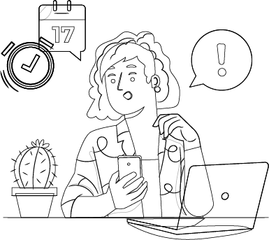
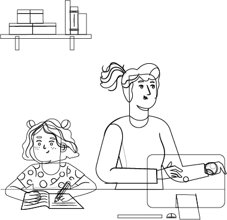
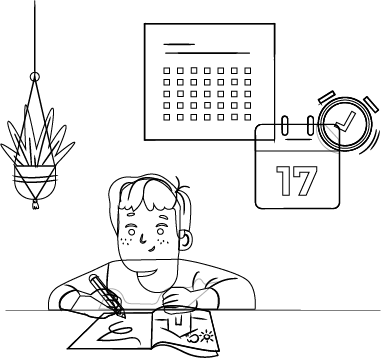
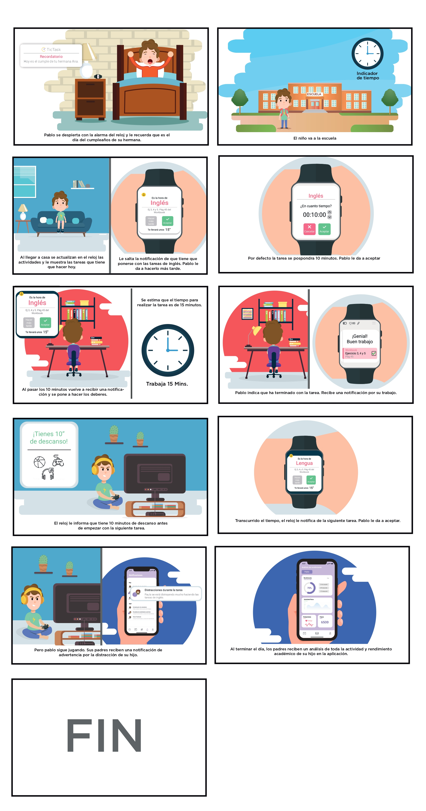
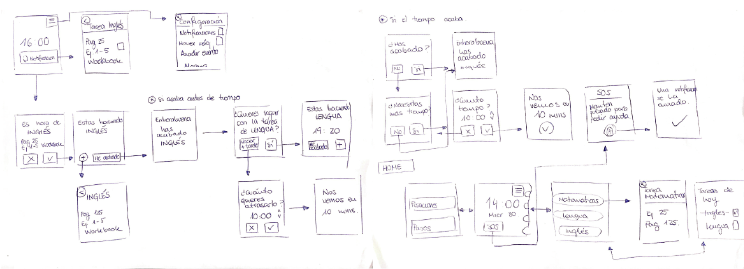
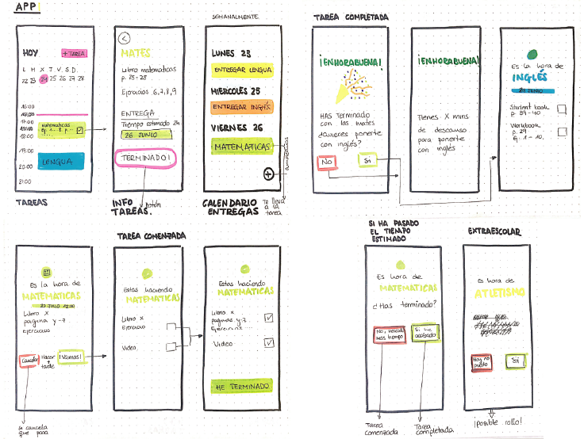

TicTask
El 2020 fue un año marcado por la pandemia. Los centros educativos cerraron, los metodos de enseñanza se digitalizaron, y miles de niños se vieron obligados a continuar su educación desde sus domicilios. Como proyecto de fin de máster, desarrollé una solución enfocada a generar un impacto positivo en la gestión del tiempo, la realización de tareas y la autonomía de los niños.

Mi rol
Mi participación se centró en las fases de investigación, ideación, arquitectura de la información y diseño visual e interacción de la App del smartwatch ,y en la aplicación de técnicas para validar el prototipo.
El proyecto fue realizado junto a mis compañeros Victor Gimeno, Leyre Ortiz, Yorcy Reyes y Naiara Zubizarreta.
El reto
Partimos del reto de generar un servicio o producto digital que abarque las necesidades generadas por la pandemia de la covid-19 en cualquier sector. Como requisito de esta solución, debe ser algo que pueda perdurar en el tiempo y adaptarse a las diferentes medidas estalecidas en el país. El tiempo de realización del mismo es de cuatro meses, y debido a la situación, debe desarrollarse completamente online.
Enfoque
Como metodología de desarrollo y proceso de diseño, nos basamos en la metodología de Lean UX. La investigación fue el punto de partida, y se mantuvo a lo largo de todo el proyecto mediante la realización de diversas técnicas. Además, se ha desarrollado a lo largo del proyecto varios MVP (Mínimo Producto Viable) para testear el concepto de negocio y validar el diseño mediante el feedback de los clientes y poder iterar sobre ello. Tras una primera investigación de las consecuencias de la pandemia en diferentes sectores, nos centramos en la educación obligatoria, teniendo como foco a los miles de niños que se habian visto afectados al continuar con su aprendizaje en los hogares.
FASE DE DESCUBRIMENTO
Para comenzar, se llevó a cabo una investigación secundaria sobre la situación de las escuelas en otros países. Se analizaron las diferentes plataformas educativas a través de un Benchmark. Y se procedió con una Netnografía de los foros de profesores y padres para identificar los perfiles y agentes que influyen en el ámbito educativo, reflejados en el Stakeholder Map.

Estas técnicas nos permitieron definir los límites del proyecto y comenzar a investigar las necesidades, los comportamientos y los puntos débiles de los usuarios. Se procedió con un cuestionario destinado a docentes y padres de niños de infantil, primaria y secundaria, obteniendo una muestra de 134 docentes y 218 padres. Y se continuó con entrevistas estructuradas a una dueña de colegio privado, un director de colegio público, una orientadora de instituto, cinco docentes y tres madres.
“Compaginar teletrabajo con niños es imposible, no se rinde igual”
Emilia, profesora y madre de dos hijos.
“Un alumno de 13 años no se puede responsabilizar de sus horarios, de las entregas. Dejarlos solos es muy complicado”
Marina, orientadora de un colegio
Finalmente, se completó la investigación con la técnica de etnografía, en la que se analizó el espacio de trabajo de los niños durante las clases virtuales.
Algunos de los hallazgos más relevantes en esta fase de descubrimiento fueron:
Los profesores han tenido que adaptarse a las nuevas tecnologías para seguir dando clase. La digitalización de la educación debería de haber pasado en 10 años, pero debido a la situación, se ha dado en tres meses.
Desde la suspensión de las clases presenciales, la carga de trabajo en mayores de 9 años ha aumentado, incrementando sus niveles de estrés.
Los alumnos tienen que buscar en diferentes plataformas las actividades a realizar y el horario de las clases porque no hay directrices claras desde los colegios.
Según el resultado del cuestionario, el 55% de los niños necesitan seguimiento de sus padres para la realización de deberes.
Varios estudios demuestran que existe una estrecha relación entre la planificación y la gestión eficaz del tiempo de estudio para lograr el éxito escolar.
Una adecuada gestión del tiempo puede actuar como moderador del estrés, reduciendo así la sobrecarga que puede influir en el bienestar tanto físico como psicológico y personal de un estudiante.
FASE DE DEFINICIÓN
La fase inicial de investigación nos permitió detectar a los agentes más afectados, por ello, decidimos centrarnos en los niños de 6 a 12 años, de 12 a 16 años y los padres. Usamos User Personas a lo largo de todo el proyecto para enfocar las decisiones de diseño y empatizar con el usuario.


Continuamos con la realización de varios User journays como herramientas para comprender, analizar, detectar los puntos débiles y oportunidades de mejora en la situación de los niños con y sin clases virtuales.


Se utilizaron técnicas de mapeo para detectar aquellos Insight donde centrar nuestra atención.

Los alumno de secundaria tienen que buscar en diferentes plataformas para ver las tareas asignadas,perdiendo mucho tiempo en ello.

Los padres tienen dificultades para compaginar el trabajo con los niños porque tienen que estar asegurarse de que los niños hagan las actividades y atiendan en las clases online.

Muchos niños de primaria y secundaria tienen dificultades para organizar y gestionar el tiempo de los deberes y estudio.
Para encaminar la sesión de ideación, desarrollamos un conjunto de principios de diseño como base para la creación del servicio en las fases restantes del proyecto, así como para evaluar las decisiones de este. Estos principios consisten en crear una solución innovadora que genere emociones positivas en el usuario. Debe adaptarse al contexto, abordando las necesidades de los usuarios en función de la edad. Ha de ser fácil de utilizar y presentar simplicidad en la interfaz. Además de tener una alta accesibilidad y ser personalizable. Tras ello, realizamos una sesión de ideación conjunta basada en el Brainstorming a través de la plataforma Miro. Tras concretar las diez ideas más destacadas, realizamos una matriz de impacto/ esfuerzo para identificar la viabilidad de las mismas. Para complementar la validación de la idea, se realizó un breve cuestionario dirigido a identificar los intereses de los usuarios. Como resultado, comenzamos a desarrollar una solución para ayudar a los niños y adolescentes a planificar su tiempo de estudio. Finalmente, se construyó el Value Preposition Canvas para ayudarnos a definir el servicio y obtener así la propuesta de valor.

FASE DE DESARROLLO
La idea a desarrollar consiste en una plataforma digital que ayuda a la planificación y gestión del tiempo de los alumnos de primaria y secundaria, obteniendo un mayor rendimiento del estudio. Esta plataforma extrae toda la información y recursos generados por los profesores, permitiendo centralizar en una misma aplicación el horario, deberes y exámenes, facilitando la organización de los alumnos. Permite, sincronizarse con las modificaciones de los profesores, avisando a los alumnos para que estén siempre al día de las últimas notificaciones y puedan fomentar su autonomía. Existen diferencias entre las plataformas destinadas a cada usuario. Para los niños de 6-12 años se ha diseñado una aplicación para un reloj, para la edad comprendida entre los 13 a 16 años una aplicación móvil y otra para permitir a los padres un control sobre sus hijos. El naming busca transmitir el concepto del proyecto, se sumó la palabra “tic” por la verificación de la tarea realizada + “task” por el listado de las tareas, teniendo como resultado Tictask. Los colores seleccionados han sido una combinación de colores vivos y saturados ya que busca ser atractivo para los niños.

El servicio presenta las siguientes funcionalidades y características:
A continuación se muestra el User Story de un niño de 9 años haciendo uso del servicio.



Para la validación del concepto, se les mostró a los usuarios el siguiente video sobre el funcionamiento del servicio y se creó una landing page
La landing page presenta el proyecto con el objetivo de analizar el interés de los usuarios mediante un botón para la descarga de la versión beta y el apartado de suscripción. Empleamos varias herramientas de análisis como Hotjar para obtener información de la interacción, visitas y movimientos de los usuarios. Y la herramienta mailchimp para gestionar el apartado de suscripciones. Como resultado, se obtuvo una tasa de conversión de un 21,13 %, considerada buena.
Además, se creó un test A/B para detectar que versión del presupuesto genera más interés en los usuarios. En los resultados, la diferencia observada en la tasa de conversión (-34,51%) no es lo suficientemente grande como para declarar un ganador significativo, sería necesario recoger más datos para tener una confianza del 95%. De cara a continuar con la realización del proyecto, se seleccionó la versión con un número mayor de conversiones.
El modelo de negocio establecido es un modelo Freemium, donde las funcionalidades de uso son limitadas. Los usuarios podrán hacer uso gratuitamente de la aplicación teniendo sólo acceso a una de las asignaturas. Para tener el servicio completo, los clientes tienen la opción de suscribirse mensualmente por 2,99€/ mes, o 29,99€/ año. Esto viene recogido en el Business Model Canvas.
SOLUCIÓN
Para la constitución del diseño visual de la plataforma se construyó, en primer lugar, el Task flow y Site map de las mismas.

Procedimos con la visualización de las aplicaciones mediante unos Wireframes de baja fidelidad, donde se representan las sesiones principales.


Finalmente trabajamos con Figma para crear las pantallas y la interacción del producto para los diferentes usuarios. Como se ha dicho anteriormente, existen diferencias entre las plataformas destinadas a cada usuario en función de las necesidades de cada edad, las cuales se ven reflejadas en una serie de funcionalidades específicas de los productos.
USUARIOS ENTRE 6 Y 12 AÑOS
En los usuarios con edades comprendidas entre 6 y 12 años, el dispositivo del que harán uso es un smartwach. Las características de la aplicación para esos usuarios son:

USUARIOS ENTRE 13 Y 16 AÑOS Para los usuarios con edades comprendidas entre 13 y 16 años, harán uso de una aplicación móvil. Las características son:

La s pantallas de la aplicación móvil para los alumnos entre 13 y 16 años son:

PADRES,MADRES Y TUTORES La aplicación destinada a los tutores permite el seguimiento y control de sus hijos en el ámbito educativo. Podrán conocer el calendario de sus hijos y visualizar qué cosas se han hecho y quedan por hacer sin tener que estar recordándoles que hagan los deberes